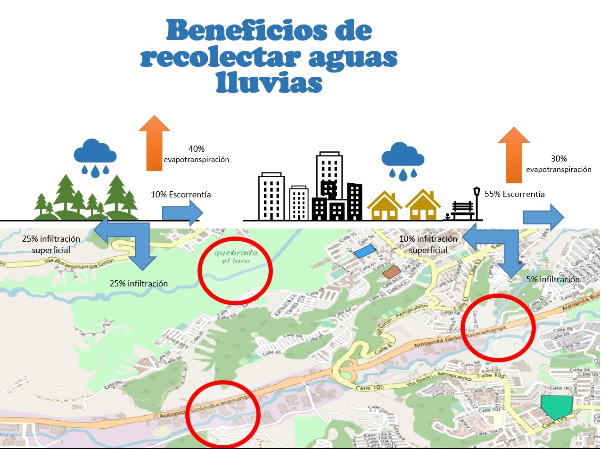

El aprovechamiento de las aguas lluvias de múltiples edificios puede genera una menor cantidad de escorrentía
la cual podemos calcular basando en los mapas elaborados y publicados aqui de precipitación anual y mensual,
está escurre a través de superficies duras y carreteras que son muy impermeables y que tienen muchos residuos de alimentos,
metales, hidrocarburos, fertilizantes, nitratos y sales que pueden contaminar las fuentes de agua de Bucaramanga tales como
la quebrada el Loro, Iglesia y Guacamayo como se esquematiza en el gráfico luego de un intenso verano. Se recomienda elaborar estudios de
contaminación de las fuentes hidricas.
Información de Bucaramanga